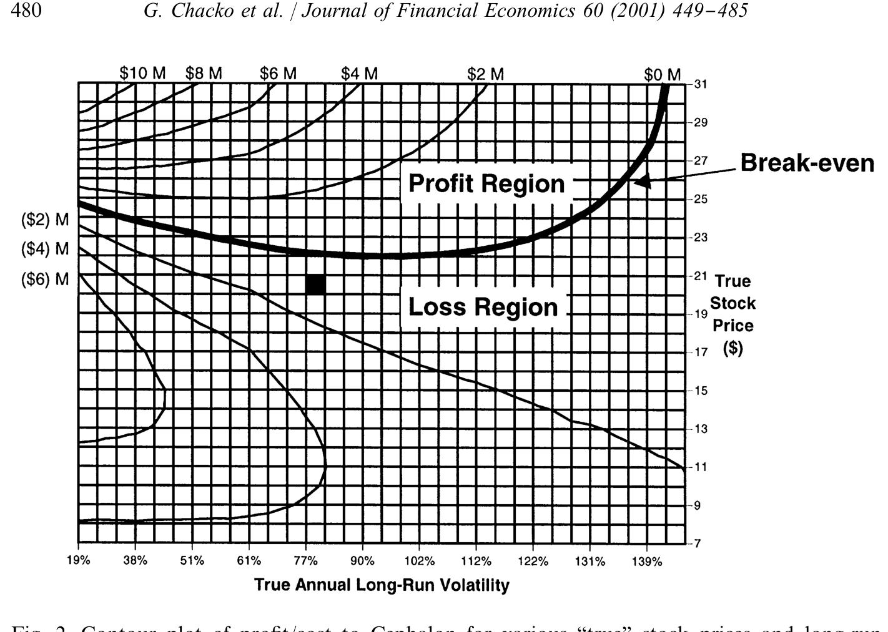
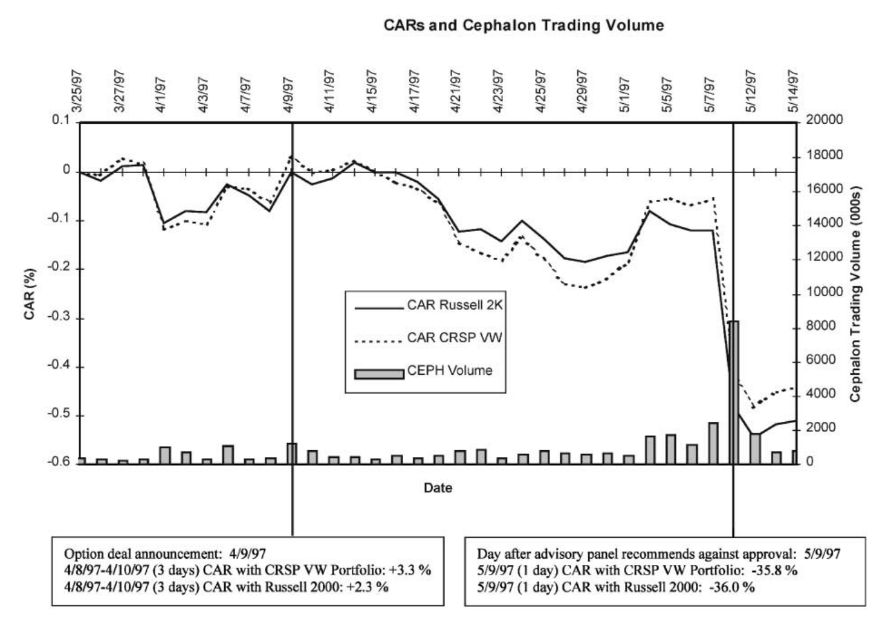
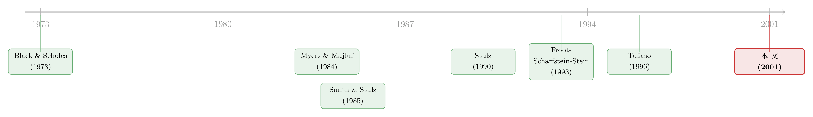

一家公司，买了自己股票的看涨期权
本文读的是 Chacko, Tufano & Verter (2001, Journal of Financial Economics)：一家生物科技公司 Cephalon 在新药等待 FDA 裁决的前夜，买入了 250 万份自家股票的看涨期权。作者用 Froot-Scharfstein-Stein 的现金流对冲理论一条条去对照这笔交易，结果发现——理论能解释它「为什么想对冲」，却解释不了「值不值得对冲」：因为真正卡住管理层的，是理论里被假设为零的那几样东西——对冲本身的死成本、外部融资到底贵不贵、以及一条藏在会计准则里的暗线。
1 引言：一笔让所有人看不懂的交易
先讲一个场景。
1997 年春天，一家叫 Cephalon 的生物科技公司，做了一件让华尔街集体皱眉的事：它买入了 250 万份以自己股票为标的的看涨期权，对价是向 SBC Warburg 增发约 49 万股普通股。
请先停下来体会一下这件事有多别扭。一家公司发新股，本是稀释自己；而它换回来的，又是一份「赌自己股价上涨」的看涨期权。换句话说，Cephalon 一边稀释股东，一边押注自己会涨。当时的评论者大多看不懂：这是炒自己的股票？是变相回购？还是管理层在拿股东的钱赌博？
这正是这篇论文的迷人之处。它不是一篇跑回归、堆样本的实证文章，而是一则临床研究 (clinical study)——把一家公司的一笔真实交易，放到显微镜下，逐层解剖。作者（其中 Tufano 是公司风险管理领域的代表人物之一）的野心也并不止于「评判这笔交易聪不聪明」，而是想借它回答一个更大的问题：
当我们把抽象的风险管理理论，真的拿去套一家活生生的公司时，理论和现实之间，到底差了哪几样东西？
接着，一个自然的问题是：这家看上去在「赌博」的公司，到底在怕什么？
2 这家公司到底在怕什么
Cephalon 成立于 1987 年，主攻神经系统疾病。1997 年春，它手里既没有一款 FDA 批准的药、也没有任何商业销售，却正站在命运的门槛上：它的第一款药 Myotrophin——一种治疗肌萎缩侧索硬化症（ALS，俗称「渐冻症」）的药物——即将在 5 月 8 日接受 FDA 顾问委员会的审评。
这场审评对 Cephalon 是生死攸关的。分析师估计，ALS 全球约有 75,000 名患者，相关治疗的全球市场每年可达 $500 million，更广义的神经病变市场则超过 $3 billion。分析师对 Myotrophin 年销售额的预测，从 1997 年的 $30 million 一路看到 1999 年的 $400 million 以上。当时多数观察者认为获批概率很高——两位分析师公开给到 70%，私下里有人说 80% 甚至更高。
这场审评的赌注，直接写在股价上：Cephalon 的股票 1997 年 4 月初约 $20；若获批，分析师认为值 $30–40；若被否，则只值 $10–15。
但真正的麻烦，不在「批不批」，而在「批了之后怎么办」。
原来，当年为了给 Myotrophin 筹研发款，Cephalon 在 1992 年 8 月通过一个由 PaineWebber 推销的研发有限合伙 (R&D limited partnership)——Cephalon Clinical Partners, L.P.（CCP）——募了 $38.7 million。代价是：这个合伙企业拥有该药的独家许可权，Cephalon 只是拿到了一个过渡期的生产销售许可。一旦药获批，Cephalon 若想把这条未来的现金流真正收回自己口袋，就必须把权利从 CCP 手里买回来。
于是，一个残酷的时间错配出现了：
- 好消息（FDA 获批）会瞬间让一个极有价值的投资机会浮现——买回药权。如表 1 所示，这笔买回的内部收益率（IRR）高达
81%到266%（取决于走要约收购还是走合同购买选择权），远在分析师常用的25%折现率之上，NPV 约$226–269 million。这几乎是「白捡的钱」。 - 但，买回药权要花真金白银：合同购买选择权约
$40 million（外加 11 年的销售提成），里程碑付款$16 million；若直接对 CCP 份额发起要约收购，管理层估计要花到$125 million。 - 而且，这笔钱需要的时机，恰恰是 FDA 刚批、销售还没爬坡、公司内部现金流仍然为负的那一两年。

Figure 2: Contour plot of pro"t/cost to Cephalon for various `truea stock prices and long-run
公司的 CFO Kevin Buchi 把他想要的东西描述得很传神——他需要一份 「反向的保险 (backwards insurance policy)」：一份在事情变好时赔付、而不是变坏时赔付的保险。普通保险保的是坏事；Cephalon 要保的，是「好事来了我却拿不出钱」。
SBC Warburg 给出的方案，就是那 250 万份看涨期权。条款是欧式、到期日 1997 年 10 月 31 日，执行价 $21.50、上限价 $39.50（即每股收益封顶在 $18），并且是亚式 (Asian-style)——用到期前 20 个交易日、每天三次观测的均价来结算。最终条款定在 5 月 7 日，FDA 开会的前一天。
到这里，故事的逻辑闭环了：如果 FDA 批了药，股价会涨，期权会赔付，这笔钱正好用来买回药权。 把「现金到账的时点」精确地焊在了「需要花钱的时点」上。
3 一份「反向的保险」：现金流对冲理论
接着，一个自然的问题是：这套逻辑，有没有理论的名分？
有，而且几乎是教科书级的吻合。Buchi 那句「它在我们最需要钱的时候给我们钱」，正是 Froot, Scharfstein & Stein（FSS, 1993, 1994）的现金流对冲 (cash-flow hedging) 理论的口语版。
FSS 的洞见在于：风险管理的目的，不是单纯降低盈利或现金流的波动；而是确保公司在该投资的时候，手里正好有钱去做那些能增值的投资。它的逻辑链条是这样的——
- 首先，假设公司面对有风险、但 NPV 为正的投资机会；
- 接着，关键假设登场：公司在筹集外部资金时会承担死成本 (deadweight costs)，而且这个成本随融资规模递增（想想 Myers & Majluf (1984) 的逆向选择，或 Stiglitz & Weiss (1981) 的信贷配给）；
- 于是，这笔死成本会让公司投资不足——把投资活动被迫绑死在内部现金流上；
- 所以，对冲就有了价值：通过把内部现金流「工程化」地匹配到投资机会上，公司可以避免在最该投资时却囊中羞涩。
这里有一个常被误解的反直觉之处：FSS 理论甚至可能让公司去增大现金流的波动。如果你最好的投资机会恰好出现在「好时候」（对 Cephalon 而言就是 FDA 获批之时），那么让现金流在好时候更充沛，反而是对的。（关于「投资机会在好年景里更值钱、融资约束也在好年景里更咬人」这条线，可参见《融资约束，为什么偏偏在好年景里更咬人？》。）
Cephalon 的案例几乎是为这个理论量身定做的：外生的风险因子是 FDA 审评（一个纯粹的特异性风险，idiosyncratic risk），它同时影响了投资机会（药权变得值钱）、现金需求（要买回药权）和股价（期权赔付的来源）。
作者把 FSS 理论翻译成了四个必须被验证的命题，这也正是这篇论文方法论上的贡献——它把抽象理论拆成了一份「经理人可操作的清单」：
- 投资是否有吸引力：若 Myotrophin 获批，买回药权是不是一个增值的投资？
- 内部资源是否不足：Cephalon 的内部现金流，是不是真的不够用？
- 外部融资是否够贵：外部融资的成本是否高（且凸），以至于外部融资是次优的？
- 对冲方案是否合适：这份期权，是不是在公司需要钱时提供了恰当的赔付、且方式划算？
注意第 4 条里那句「且方式划算」。FSS 理论里，风险管理被假设为没有死成本的。这篇论文的全部张力，都将集中在这个被理论一笔带过的假设上。
4 把理论一条条摆上桌：反转开始
然后，作者做了一件很「较真」的事——他们真的拿着这四条命题，一条条去对账。前两条还算顺，但越往下，理论和现实的裂缝就越大。
命题 1（投资有吸引力）几乎无可争议。 表 1 的折现现金流分析显示，无论用要约收购还是合同购买选择权，买回药权的 IRR 都在 81%–266%，NPV 在 $226–269 million。这是一个好到不需要争论的投资。
但真正关键的一步，出在命题 2（内部现金不足）上——这里出现了第一个反转。
Cephalon 自己在 8-K 文件里声称，即便药获批，内部现金流也不足以同时维持日常经营和买回药权。可作者的分析却给出了相反的答案：Cephalon 其实大概率能用现金完成买回，而所谓的「现金缺口」，是公司坚持用某一种特定方式买回药权造成的。
证据藏在数字的对比里。表 2 估算，若 Cephalon 在 1997 年用 $125 million 现金通过要约收购买断合伙企业，当年融资缺口约 $200 million、两年累计约 $230 million；但若改走合同购买选择权、把 $40 million 付款推到 1999 年，1997 年的缺口就只有 $85 million、两年累计 $129 million，几乎是前者的一半。而这些缺口，要对照三个事实来看：(a) 公司 1996 年底有 $146 million 现金；(b) 它本就打算维持相当于几年运营开支的目标现金；(c) 它估计 FDA 决定后几年里还能通过证券发行筹到 $80–100 million。
换句话说，缺口是真实存在的，但远没有「非对冲不可」那么夸张——它在很大程度上是「我偏要一次性现金买断」这个选择的产物。
命题 3（外部融资够贵）则撞上了一堵更尴尬的墙。 FSS 理论的整座大厦，都建在「外部融资有高昂死成本」这块地基上。可作者坦诚地说：他们几乎找不到可靠的数据，能让一位经理人去测量这个死成本到底有多大。更刺眼的是，作者认为，在 Cephalon 这个案例里，外部融资的死成本可能很小，甚至可能为负。
为什么可能为负？因为对一家生物科技公司而言，FDA 获批是天大的利好——这时候发新股，市场是追着买的，发行未必伴随股价下跌（这一点与 Myers-Majluf 的「发股即坏消息」逻辑正好相反）。也就是说，恰恰在 Cephalon 需要钱的那个「好时候」，外部融资可能是最便宜的，而不是最贵的。
这就动摇了对冲的根基：如果在你最需要钱的时候，外部融资本来就不贵，那 FSS 意义上「为了避免昂贵外部融资而对冲」的理由，就站不太住了。
5 理论忽略了什么：对冲，本身也有死成本
到这里，读者会忍不住问：那这笔交易难道全错了吗？
不。作者的高明之处在于，他们没有停在「拆台」，而是顺势提出了这篇论文最重要的概念贡献——
风险管理本身，也是有死成本的。而 FSS 理论假设它没有。
回想 FSS 的逻辑：风险管理之所以有价值，是因为外部融资有死成本。可如果风险管理这件事本身也带来死成本呢？那么公司面对的，就不再是「对冲 vs 不对冲」的非黑即白，而是一道比较相对死成本的题：
a1 | 把所需现金从外部筹来的死成本——这是 FSS 理论唯一盯着的那一块 a2 | 风险管理方案本身的死成本——FSS 理论假设它等于零，本文把它请回了等式右边
只有当左边（外部融资的死成本）大于右边（对冲方案自身的死成本）时，对冲才真正划算。FSS 理论之所以漏掉这道比较，是因为它默认 \(C_{rm}=0\)；而本文用 Cephalon 的例子说明：当用股权衍生品来管理风险时，\(C_{rm}\) 可能相当大。
那么这份期权的死成本到底有多大？作者在一份单独的技术附录里给它做了估值。这正是为什么需要看图 2：因为这些期权在估值上很棘手——它们本质上是一种「负的认股权证」(negative warrants)（公司付出股权、买入对自身股价的看涨敞口），而且标的股价的动态里嵌着一个重大的跳跃 (jump)——FDA 顾问委员会的推荐结果。图 2 把「真实股价」在不同取值下，这笔交易给 Cephalon 带来的盈亏/成本画成了等高线：交易的成本，高度依赖于市场当时给 Cephalon 定的价，是否偏离了它的「真实」价值。
这就引出了一个微妙的循环：用自家股票的衍生品来对冲，意味着对冲的成本，本身又取决于市场对这家公司的（可能有偏的）定价。用别人的资产对冲（比如金价、汇率）没有这个问题——这也是为什么这类股权衍生品的死成本，可能比经理人直觉以为的要大得多。
（关于「公司到底用衍生品对冲了多少、又该怎么对冲」这条更宽的实证脉络，可参见《公司到底用衍生品对冲了多少风险？》与《对冲的下半场：不是「要不要」，而是「怎么对冲」》。）
6 会计与「市场怎么看」：藏在条款里的暗线
如果对冲的 FSS 理由并不那么牢靠，那 Cephalon 为什么还是做了这笔交易？
这里藏着第二条暗线——会计 (accounting)。
回看期权条款里那个不起眼的细节：到期时，Cephalon 可以选择现金结算，也可以选择支付执行价、收取股票。公司明明打算在期权实值时用现金结算，却特意保留了股票结算条款。CFO 解释说，这个条款不增加实际支付的权利金，却带来「更漂亮的会计处理」——它让期权收益能被计入综合收益 (comprehensive income)，而不是直接进利润表 (income statement)。
这是一个意味深长的发现。作者由此指出：在 Cephalon 这个案例里，风险管理的动机，与其说是在管理现金流，不如说是在管理盈余 (managing earnings)。FSS 理论里只有现金流和投资，没有「财报好不好看」这一维；可现实里，经理人对会计后果的在意，实实在在地塑造了风险管理的选择。
那么市场买不买账？图 3 记录了两个关键时点——期权交易公告和FDA 决定——前后市场的反应。

Figure 3: Market reaction to announcement of Cephalon option transaction and FDA decision
也正是在这里，作者给出了全文最诚实、也最克制的一句话：即便在这样一个管理层把目标解释得清清楚楚的临床案例里，人们也无法排除一个替代解释——这笔交易，说到底可能只是让公司赌一把自家药的成败。一份「在好时候赔付的保险」和「一张押注成功的彩票」，在事后的收益结构上，长得几乎一模一样。理论给了它一个体面的名字（现金流对冲），但数据无法证伪那个更朴素的名字（赌博）。
7 文献脉络
把这篇论文放回它所在的那条河流里，会看得更清楚。
最上游，是 Black & Scholes (1973)——给了我们给期权（以及这种「负认股权证」）定价的工具，没有它，第 5 节那份估值无从谈起。
中游，是「公司为什么要对冲」这个问题的理论化。早期的答案五花八门：Stulz (1984) 的最优对冲、Smith & Stulz (1985) 把对冲归因于非线性税收、财务困境成本与经理人风险厌恶、Stulz (1990) 的管理层自由裁量权与融资政策。直到 Froot, Scharfstein & Stein (1993) 把这些线索拧成一条最锋利的逻辑——风险管理是为了协调投资与融资政策，避免昂贵外部融资下的投资不足。这就是本文的理论母体。
下游，是把理论拖进现实去检验。Tufano (1996) 用北美金矿业的数据，做了风险管理实证的标杆之作；而本文（作者之一正是 Tufano）则换了一条更「显微镜」的路径——不是大样本回归，而是把单独一笔交易解剖到底。它所处的位置，恰是在 FSS 理论和 Tufano (1996) 式实证之间，补上了一块「理论落地时究竟卡在哪里」的临床证据，并顺手为理论提出了一个自然的扩展：把风险管理本身的死成本写进模型（这一关切，也呼应了 Tufano 1998a 对公司风险管理代理成本的讨论）。

8 评论与延伸（Q&A + 研究方向）
(a) 几个可能的疑问
Q：买自家股票的看涨期权，和直接发新股募资，到底有什么不同？
关键在时点与状态依赖。直接发股是「现在就稀释、现在就拿钱」；而这份期权是「只在股价上涨（即 FDA 获批）的那个状态下才大额赔付」。它把现金的到账，精准地绑定在了「公司最需要钱、且最有价值的投资机会出现」的那个状态上。这正是 FSS 现金流对冲的精髓：不是要不要钱，而是要在对的状态下有钱。
Q：这和普通公司用利率/汇率/商品衍生品对冲，本质区别在哪？
普通对冲用的是外部的、与公司价值大体独立的标的（金价、汇率）。Cephalon 用的是自家股票——这带来两个特殊问题：一是对冲成本本身取决于市场对自家股票的（可能有偏的）定价；二是它对冲的是一个纯特异性风险（FDA 决定），而特异性风险通常被认为只能靠保险、而非资本市场来管理。本文正是「用资本市场管理特异性风险 + 融资不确定性」的一个罕见样本。
Q：作者说外部融资死成本「可能为负」，这不是和 Myers-Majluf 矛盾吗？
不矛盾，而是补充。Myers-Majluf (1984) 说的是「信息不对称下发股是坏消息」。但 Cephalon 需要钱的时点，恰是 FDA 利好兑现、信息不对称大幅降低之时——这时发股，市场是追捧的。所以「在好消息状态下融资」反而便宜。这恰恰削弱了 FSS「为避免昂贵融资而对冲」的前提，是本文最尖锐的一处反转。
Q：既然作者把 FSS 的理由几乎逐条质疑了，为什么不直接说「这笔交易是错的」？
因为这是一篇方法论上极克制的临床研究。作者反复强调，目的不是评判交易的对错，而是展示「理论落地时会遇到哪些理论没说的东西」。而且他们诚实地承认：死成本数据本就难以测量，谁也没有可靠的基准。与其下断言，不如指出「我们无法排除这只是一次赌博」。
Q：那个「股票结算条款」为什么是全文的点睛之笔？
因为它揭示了一个 FSS 理论里根本不存在的维度——盈余管理 (earnings management)。条款不改变经济实质（实际权利金不变），只改变会计归类（进综合收益而非利润表）。如果一笔「风险管理」交易的设计细节是被会计后果驱动的，那它的真实动机就不再纯粹是现金流对冲了。这把「财报」拉进了风险管理的解释变量里。
Q：这篇 2001 年的老论文，对今天还有什么用？
它的方法论遗产大于具体结论。它示范了如何把一笔交易拆成「理论可检验的命题清单」，又如何诚实地标注出理论的空白（死成本不可测、融资成本可能为负、会计动机缺位）。今天研究公司持有风险资产、用衍生品「对赌」自身基本面的行为时，这套「相对死成本」的框架依然适用。
(b) 几个可能的研究问题与提案
1. 用自家股票衍生品对冲特异性风险的公司，事后表现如何？
【经济故事】本文留下一个无法证伪的问题：这是对冲还是赌博？如果能找到一批「买入自家股票看涨期权/写出看跌期权用于状态依赖融资」的公司，比较其事后投资、融资与业绩，就能在更大样本上区分两种动机。 【可行性】中。难点在样本稀少——这类交易很罕见。可从 8-K、SEC 衍生品披露中手工收集；识别上可用「是否真的在好状态下完成了那笔目标投资」作为区分对冲与赌博的代理。
2. 把「风险管理的死成本」结构化地估计出来。
【经济故事】本文的核心呼吁是「对冲本身有死成本，但理论没说怎么量」。一个自然的延伸是：用期权定价 + 公司自身股价偏离基本面的程度，结构化地估计股权衍生品对冲的死成本，并检验它是否随信息不对称、股价高估程度而变化。 【可行性】中高。期权估值方法（含跳跃）已成熟；难点是「真实价值」的代理。可借鉴本文图 2 的「真实股价」敏感性思路，用结构模型刻画。
3. 现金流对冲在信用市场里的对应物：公司债发行人如何用衍生品匹配「再融资时点」？
【经济故事】Cephalon 的问题本质是「需要钱的时点」与「能便宜拿到钱的状态」的错配。这在公司债市场更普遍——发行人面临到期墙与再融资窗口。哪些发行人用利率/信用衍生品去对冲「再融资时正好赶上信用寒冬」的风险？ 【可行性】高。数据可得（TRACE、Mergent FISD、衍生品持仓披露），识别上可用信用周期的外生波动（如货币政策冲击）作为「状态」。这条线与本博客关注的公司债/流动性方向高度契合。
4. 会计动机对风险管理工具选择的影响。
【经济故事】本文发现股票结算条款是会计驱动的。一个可检验的命题是：会计准则（如对衍生品损益的计入规则）变化时，公司的对冲工具选择是否随之系统性改变？ 【可行性】中。可利用 FAS 133 等准则变更前后的自然实验，做双重差分 (difference-in-differences, DiD)。难点是把「会计动机」从「经济动机」中干净剥离。
5. 外资持有人与特异性风险的资本市场对冲。
【经济故事】当公司的股东结构里外资比例不同时，「用自家股票衍生品对冲特异性风险」的成本与可行性是否不同？外资持有人对盈余管理、信息不对称的敏感度不一样，可能改变这类交易的设计。 【可行性】中低。需要把股东结构、衍生品交易、特异性事件三者匹配，样本稀薄；但若聚焦某类高特异性风险行业（生物科技、矿业），或可成形。
9 我的判断
这篇论文的贡献，不在于一个系数，而在于一种诚实。它没有用一个漂亮的回归去「证明」风险管理理论，而是反过来，用一笔真实交易去逼问理论的边界——并坦然承认理论在三个地方失语：对冲本身的死成本无人能量、外部融资成本可能为负、会计动机被完全忽略。把「比较相对死成本」这道题摆回 FSS 的等式里，是它最持久的概念贡献。
对识别（如果一篇临床研究也谈识别的话）的担忧，是显而易见的：N = 1。所有结论都建立在一家公司、一笔交易、一段管理层自述之上。作者自己也最清楚这一点——他们反复强调无法排除「这只是一次赌博」。临床研究的力量在深度，软肋也在样本：我们无从知道 Cephalon 是常态还是异类。此外，对「外部融资死成本可能为负」的论断，更多是基于情境推理而非硬数据，这恰恰也是作者承认的——这类成本本就难以测量。
我接下来最想看到的，是把这则故事放大成一个分布：当更多公司被发现用自身基本面的衍生品去做状态依赖的融资安排时，它们事后到底是兑现了那笔「白捡的」投资（对冲成立），还是单纯赢了或输了一把（赌博）。在这个意义上，2001 年的 Cephalon，更像是一个还没被系统检验的假说的「零号病人」。
参考文献
- Black, F., Scholes, M. (1973). The pricing of options and corporate liabilities. Journal of Political Economy 81, 637–659.
- Chacko, G., Tufano, P., Verter, G. (2001). Cephalon, Inc. Taking risk management theory seriously. Journal of Financial Economics 60(2–3), 449–485.
- DeMarzo, P., Duffie, D. (1995). Corporate incentives for hedging and hedge accounting. Review of Financial Studies 8, 743–772.
- Fazzari, S., Hubbard, R.G., Petersen, B.C. (1988). Financing constraints and corporate investment. Brookings Papers on Economic Activity 1, 141–195.
- Froot, K.A., Scharfstein, D.S., Stein, J.C. (1993). Risk management: coordinating corporate investment and financing policies. Journal of Finance 48(5), 1629–1658.
- Froot, K.A., Scharfstein, D.S., Stein, J.C. (1994). A framework for risk management. Harvard Business Review, 22–32.
- Myers, S.C., Majluf, N.S. (1984). Corporate financing and investment decisions when firms have information that investors do not have. Journal of Financial Economics 13, 187–221.
- Smith, C., Stulz, R. (1985). The determinants of firms' hedging policies. Journal of Financial and Quantitative Analysis 20, 391–405.
- Stiglitz, J.E., Weiss, A. (1981). Credit rationing in markets with imperfect information. The American Economic Review 71, 393–410.
- Stulz, R. (1984). Optimal hedging policies. Journal of Financial and Quantitative Analysis 19, 127–140.
- Stulz, R. (1990). Managerial discretion and optimal financing policies. Journal of Financial Economics 26, 3–28.
- Stulz, R. (1996). Rethinking risk management. Journal of Applied Corporate Finance 9, 8–24.
- Tufano, P. (1996). Who manages risk? An empirical examination of risk management in the gold mining industry. Journal of Finance 51, 1097–1137.
- Tufano, P. (1998a). Agency costs of corporate risk management. Financial Management 27, 67–77.